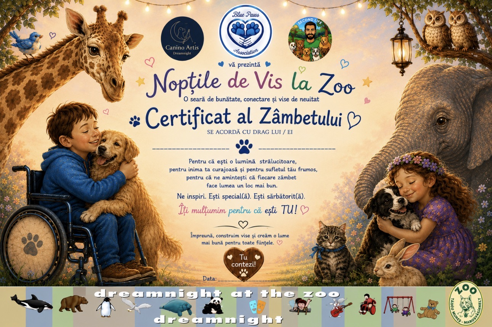
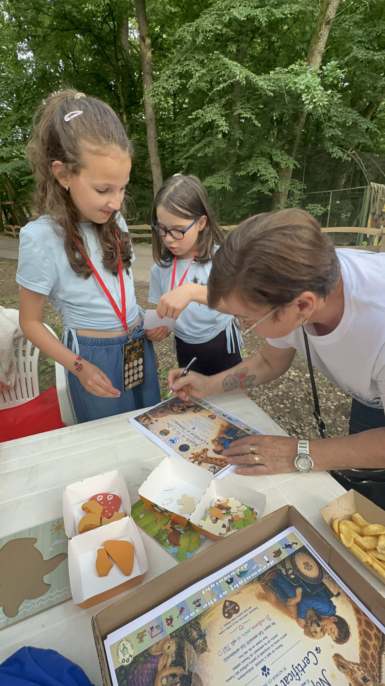
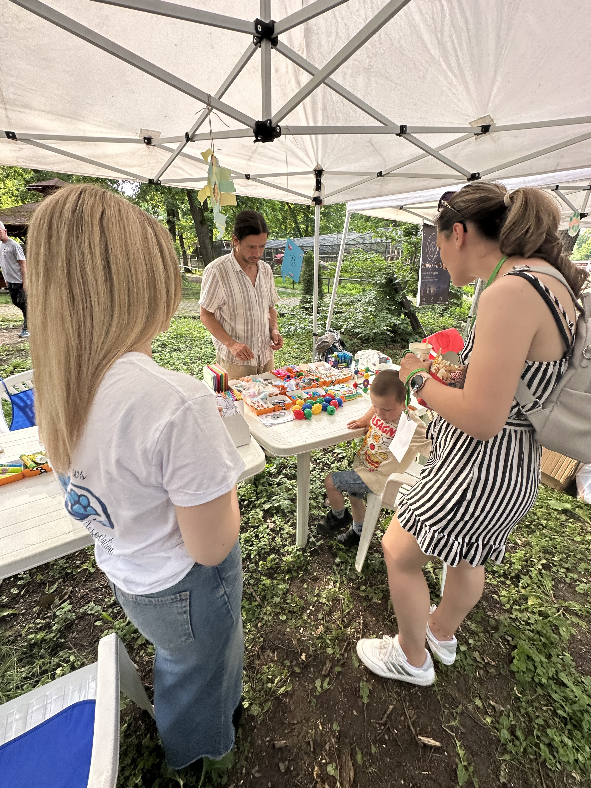
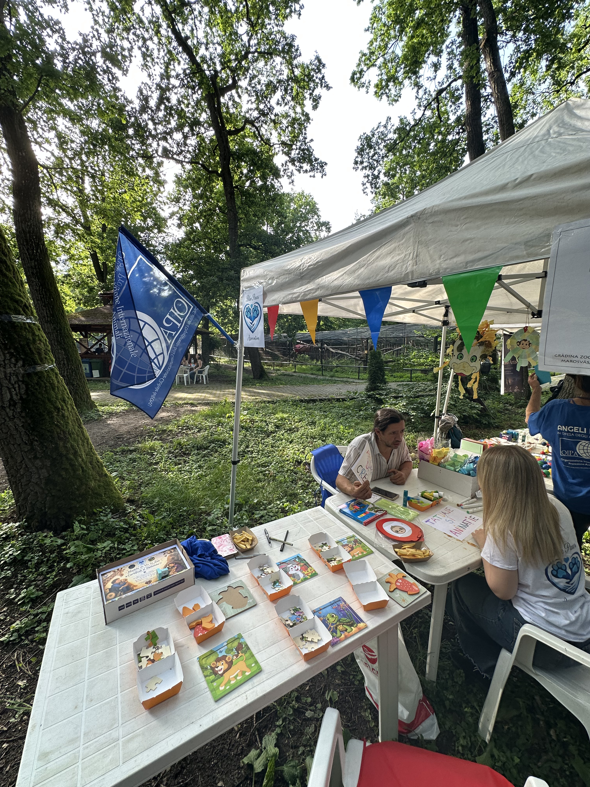
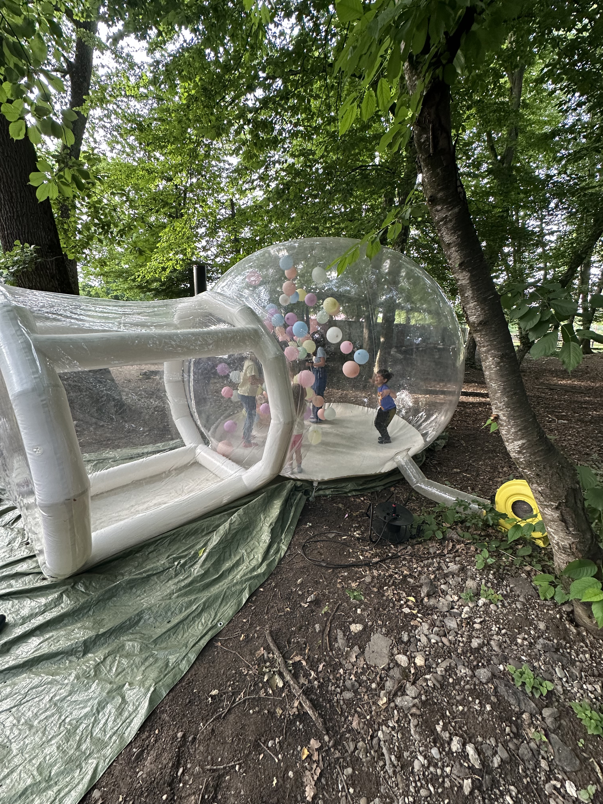
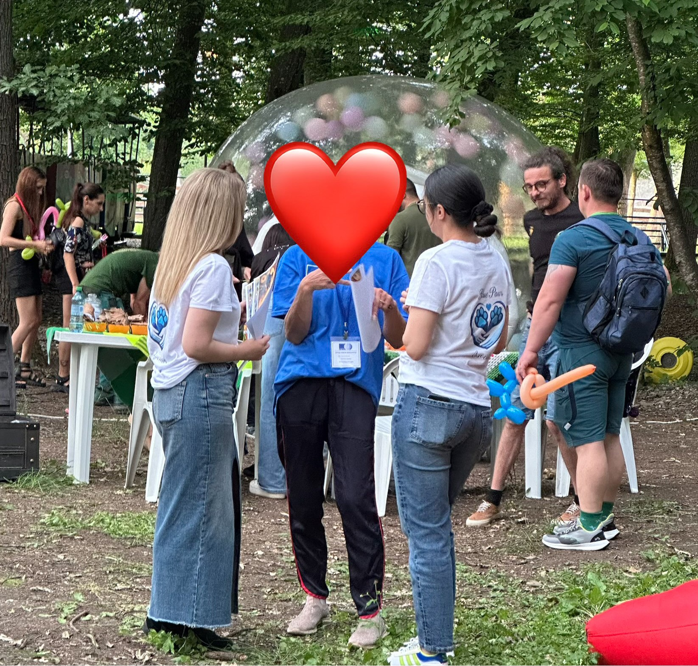

A magical evening dedicated to bringing joy, inclusivity, and beautiful memories to special children and their families.

Given to children fighting chronic illness or disabilities to highlight their resilience.


Regarding biodiversity and inclusive environments.


Capturing the whimsical, stress-free magic designed for these special visitors.
